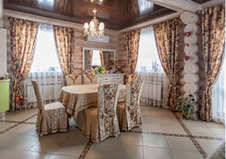
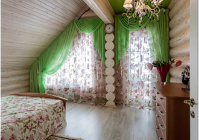
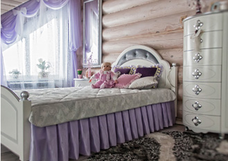

Работаем с 1996 года
Дружный коллектив
Широкий ассортимент тканей
Срочный пошив
Надежные поставщики
Собственный цех пошива
Профессиональные дизайнеры
Бригада установщиков
Шторы
Рулонные шторы и шторы плиссе
Карнизы
Электроуправляемые системы
Постельное белье
Аксессуары для штор
Екатерина
Лариса
Начать следует с определения модели, длины и цвета штор. Во многом они зависят от интерьера комнаты, высоты потолков и формы окон. Правильно подобранные шторы могут визуально изменить помещение и сделать нестандартное окно интересной деталью интерьера.
При выборе материала для штор обязательно обращайте внимание на цветовое решение стен. Под яркие пестрые обои подойдут однотонные ткани без узоров с минимумом декоративных элементов, стены спокойных цветов можно оживить яркими шторами с рисунком. Воздушные ткани придают комнате объем и легкость. Плотные и тяжелые ткани создают ощущение тепла и уюта, такие отлично уживаются в гостиной или спальне.
Довольно распространенный вопрос, которым задается каждый человек намеревающийся заказать шторы. В классическом случае параметрами расчета будут плотность ткани и размер карниза. Длину карниза умножают на 2 или 3. Все зависит от желаемого количества складок и светопроницаемости.
Длина ограничивается высотой потолка и моделью выбранного карниза. Шторы, ниспадающие на пол, будут уместны в спальне или в гостиной, для кухни и детской больше подойдут римские шторы, чуть ниже подоконника. Хотя самый распространенный вариант – шторы 1-2 см не достающие до пола.
Если вы не собираетесь в ближайшее время менять мебель в комнате, то можно подобрать портьеры под цвет мебели. Сейчас этот прием один из самых популярных среди дизайнеров.
Отличный вариант – шторы нейтральных тонов. Это могут быть песочный, бежевый, кремовый или натуральный оттенок. Они всегда смотрятся красиво и ненавязчиво.
Охрана приватности. Шторы такого рода создаются из современных полупрозрачных материалов. Они неплохо пропускают дневной солнечный свет. Но технология строения ткани дает возможность ей как бы рассеивать видимую «картину». сохранение теплого микроклимата. Если в холодное зимнее время, вы закроете окно плотными шторами, то в вашей комнате станет более уютно и тепло. регулирование освещения. Это самая важная функциональная задача. Когда захочется, шторы прекрасно защитят вас от излишнего солнечного света.
Очень изящно смотрятся потолочные карнизы, портьеры словно льются с потолка. Карнизы из металла – прекрасное дополнение к современному дизайну комнаты. Пластиковые варианты дешевле, но не хуже, они находят свое место в детской, на кухне и любой другой комнате.
Выбор очень велик, поэтому рекомендуем проконсультироваться со специалистом
Забавный, но часто задаваемый вопрос, который звучит при заказе штор. Делать будут с любовью, с надеждой угодить заказчику, со всей тщательность на которую способны мастера салона штор «Золотая вуаль».
ВИДЕОМАТЕРИАЛЫ
